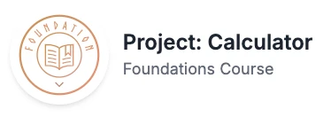

My tech projects
You can watch my tech projects progress. Watch this space.

As final project of The Odin Project Foundations Course, I created an on-screen calculator using HTML, CSS, and JavaScript.
See for yourself

As part of The Odin Project Foundations Course, I built a basic recipe website practising with HTML.
See for yourself

As part of The Odin Project curriculum, I created this example landing page using HTML and CSS.
See for yourself

As part of The Odin Project curriculum, I created a Rock Paper Scissors game using HTML and JavaScript.
See for yourself
As part of The Odin Project curriculum, I completed the Etch-a-Sketch Assignment using HTML, JavaScript, and CSS.
See for yourself
As part of the She Codes Plus curriculum, I created a responsive website using HTML and CSS.
See for yourself